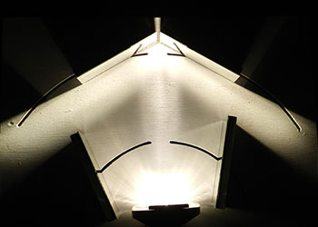

Umeå School of Architecture
2nd semester/spring 2012
Perception of light
Lucius arbor -
the tree of light
the tree of light
The focused beam of the headlight creates the tree trunk. On the top the tree trunk is split, redirected and distorted, creating patterns and spaces of light and shadow, which together creates the crown of the tree.
Lucius as in light, arbor as in tree,
because light is the source of life.
Group members
Anna Carlsson, Ebba Forsberg, Fritjof Kyander, Markus Hanning, Viktor Sjölander


